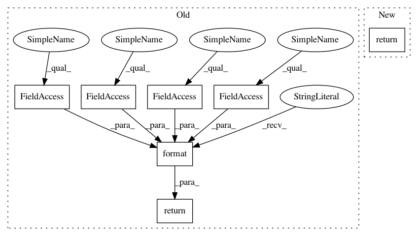

706fdc0984a1016bc7f9616cc988dc4b53ea3793,torch_geometric/nn/norm/batch_norm.py,BatchNorm,__repr__,#BatchNorm#,39
Before Change
return super(BatchNorm, self).forward(x)
def __repr__(self):
return ("{}({}, eps={}, momentum={}, affine={}, "
"track_running_stats={})").format(self.__class__.__name__,
self.num_features, self.eps,
self.momentum, self.affine,
self.track_running_stats)
After Change
return self.module(x)
def __repr__(self):
return f"{self.__class__.__name__}({self.module.num_features})"
In pattern: SUPERPATTERN
Frequency: 4
Non-data size: 7
Instances
Project Name: rusty1s/pytorch_geometric
Commit Name: 706fdc0984a1016bc7f9616cc988dc4b53ea3793
Time: 2020-07-28
Author: matthias.fey@tu-dortmund.de
File Name: torch_geometric/nn/norm/batch_norm.py
Class Name: BatchNorm
Method Name: __repr__
Project Name: rusty1s/pytorch_geometric
Commit Name: 706fdc0984a1016bc7f9616cc988dc4b53ea3793
Time: 2020-07-28
Author: matthias.fey@tu-dortmund.de
File Name: torch_geometric/nn/norm/batch_norm.py
Class Name: BatchNorm
Method Name: __repr__
Project Name: GoogleCloudPlatform/python-docs-samples
Commit Name: 2d6afd5eac5e22fa564703a2dd2989c785007e55
Time: 2020-06-05
Author: sdlin@users.noreply.github.com
File Name: firestore/cloud-client/snippets.py
Class Name: City
Method Name: __repr__
Project Name: catalyst-team/catalyst
Commit Name: cc01e8a726fabd2c758303b1a3174fb2b17be5a2
Time: 2020-10-10
Author: dimdoroshenko@gmail.com
File Name: catalyst/contrib/nn/modules/cosface.py
Class Name: CosFace
Method Name: __repr__